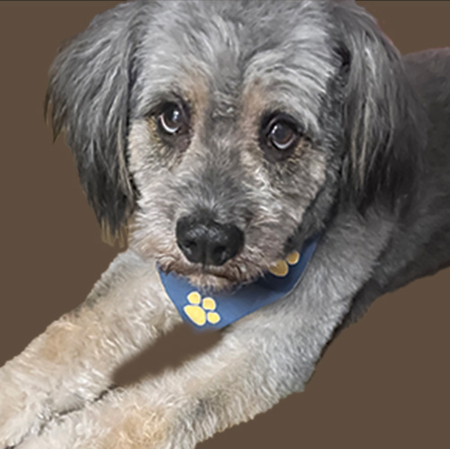
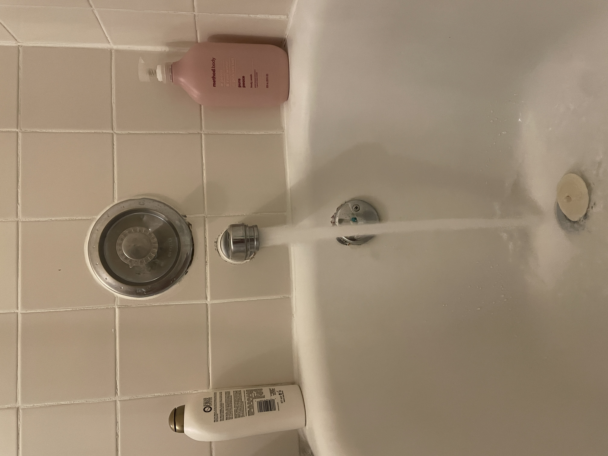
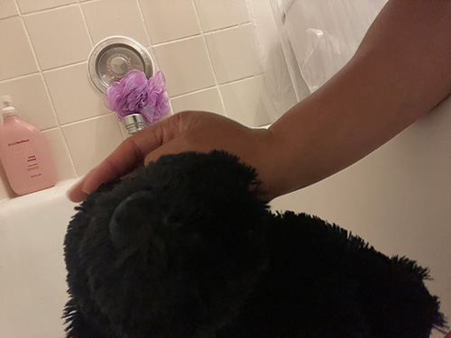
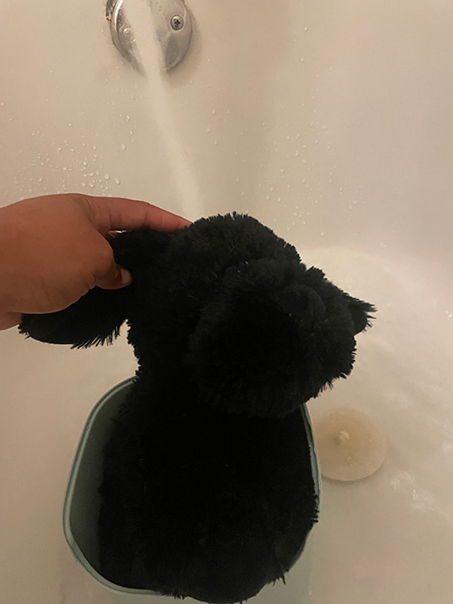
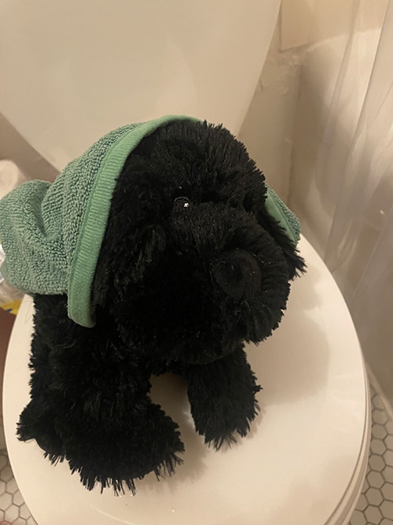

Freshly bathed pup named bear
Step 1 Preparing the Tools
The bath essentials
Before you begin cleaning your puppy, ensure you have all the necessary supplies.
The most crucial item you'll need is a suitable bottle of pet shampoo.
If the dog has any specific conditions, it's essential to use the appropriate medical shampoo.
Additionally, prepare a towel, a brush, dog perfume and fill the tub with lukewarm water.
Step 2 The Wash
Getting clean
The first step is to brush the dog, ensuring you remove all excess fur and clear it out of the way.
Then, wet the dog with lukewarm water and apply the shampoo.
Gently start washing, making sure to cover every area from the paws to the underbelly, including hard-to-reach places.
Be careful not to get soapy water in the dog's eyes or ears.
Step 3 The Rinse
A nice rinse makes a good bath
Now it's time to rinse off all that soap, bringing you one step closer to a clean and fresher pet.
Remember to cover the dog's eyes and ears while rinsing to prevent water or soap from getting in them, as it's just as uncomfortable for your pet as it is for you.
Get as much soap residue as you can off.
Step 4 The Dry
All dry and comfortable
For this final step, you can use a towel or a blow dryer specifically designed for pets.
Gently pat dry any areas where water still remains, and consider adding some doggy perfume for an extra pleasant scent.
It's always a good idea to reward your dog with a treat for being cooperative during the grooming process.